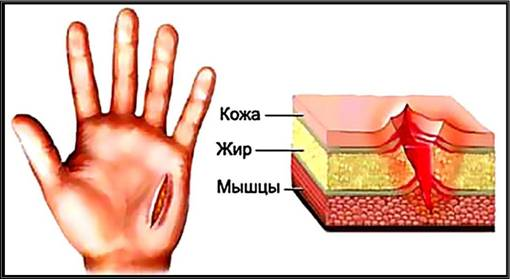

Перелом, его виды и признаки
Перелом кости — полное или частичное нарушение целостности кости при нагрузке, превышающей прочность травмируемого участка скелета.
- Виды переломов:
- По целостности кожного покрова
- Закрытые
- Открытые
- По тяжести поражения
- Полные (со смещением или без)
- Неполные (трещины и надломы)
Признаки переломов: - Относительные признаки перелома
- Боль
- Отёк
- Гематома
- Нарушение функции повреждённой конечности
- Абсолютные признаки перелома
- Неестественное положение конечности
- Конечность подвижна в том месте, где нет сустава
- Крепитация (своеобразный хруст)
- Костные отломки, которые могут быть видны в ране
Первая помощь при закрытом переломе
- Остановить кровотечение, если оно есть;
- Наложить на конечность фиксирующую повязку (шину), обеспечивающую неподвижность обломков кости. При этом надо создать неподвижность в суставах выше и ниже перелома;
- Приложить холод на место повреждения;
- Дать обезболивающее лекарство;
- Доставить пострадавшего в травматологический пункт или вызвать «скорую помощь».

Первая помощь при открытом переломе
- Остановить кровотечение, если оно есть. Если кровотечение незначительное, то достаточно наложить давящую повязку. При сильном кровотечении накладываем жгут, не забывая отметить время его наложения;
- Кожу вокруг раны необходимо обработать антисептическим средством (йод, зеленка). В случае его отсутствия рану надо закрыть хлопчатобумажной тканью;
- Наложить шину, также, как и в случае закрытого перелома, но избегая места, где выступают наружу костные обломки;
- Дать обезболивающее лекарство;
- Доставить пострадавшего в травматологический пункт или вызвать «скорую помощь».
Меры предосторожности
- При шинировании поврежденной конечности необходимо придать ей физиологическое (обычное) положение;
- Категорически недопустимо самостоятельное вправление вывихов или составление отломков костей, это может привести к серьезным осложнениям — повреждению сосудов, нервов, усилению травматического шока и смерти пострадавшего;
- При переломах костей таза и позвоночника человека оставляют на месте до прибытия бригады «скорой помощи». Можно при участии трех помощников перенести пострадавшего на жесткий щит. При этом надо следить, чтобы тело пострадавшего сохранило исходное положение. Таким образом можно ускорить отправку пострадавшего в лечебное учреждение;
- Прием алкоголя категорически противопоказан.